Before we start we must know that this claim is made from tafsir no real evidence in Quran or sunnah Actually a lot of peace verses were revealed in Medina For example
Surah At-Tawba (The Repentance)
9:4
As for those who have honoured the treaty you made with them and who have not supported anyone against you: fulfil your agreement with them to the end of their term. God loves those who are mindful of Him.
Translation: Abdul Haleem | Medinan
Surah At-Tawba (The Repentance)
9:6
If any one of the idolaters should seek your protection [Prophet], grant it to him so that he may hear the word of God, then take him to a place safe for him, for they are people with no knowledge [of it].
Translation: Abdul Haleem | Medinan
Surah Al-Mumtahana (She that is to be examined)
60:8
and He does not forbid you to deal kindly and justly with anyone who has not fought you for your faith or driven you out of your homes: God loves the just.
Translation: Abdul Haleem | Medinan
Surah Al-Anfaal (The Spoils of War)
8:61
But if they incline towards peace, you [Prophet] must also incline towards it, and put your trust in God: He is the All Hearing, the All Knowing.
Translation: Abdul Haleem | Medinan
Surah Al-Baqara (The Cow)
2:190
Fight in God’s cause against those who fight you, but do not overstep the limits: God does not love those who overstep the limits.
Translation: Abdul Haleem | Medinan
Lets see if scholars actually responded to this
Translation: “After observation it has been shown the weakness of the argument for who says that the peace verse were abroagated by the sword verse and it isn’t like that”
-Source: Al burhan fi ulum al-Quran imam badr al-din volume 1 page number 48
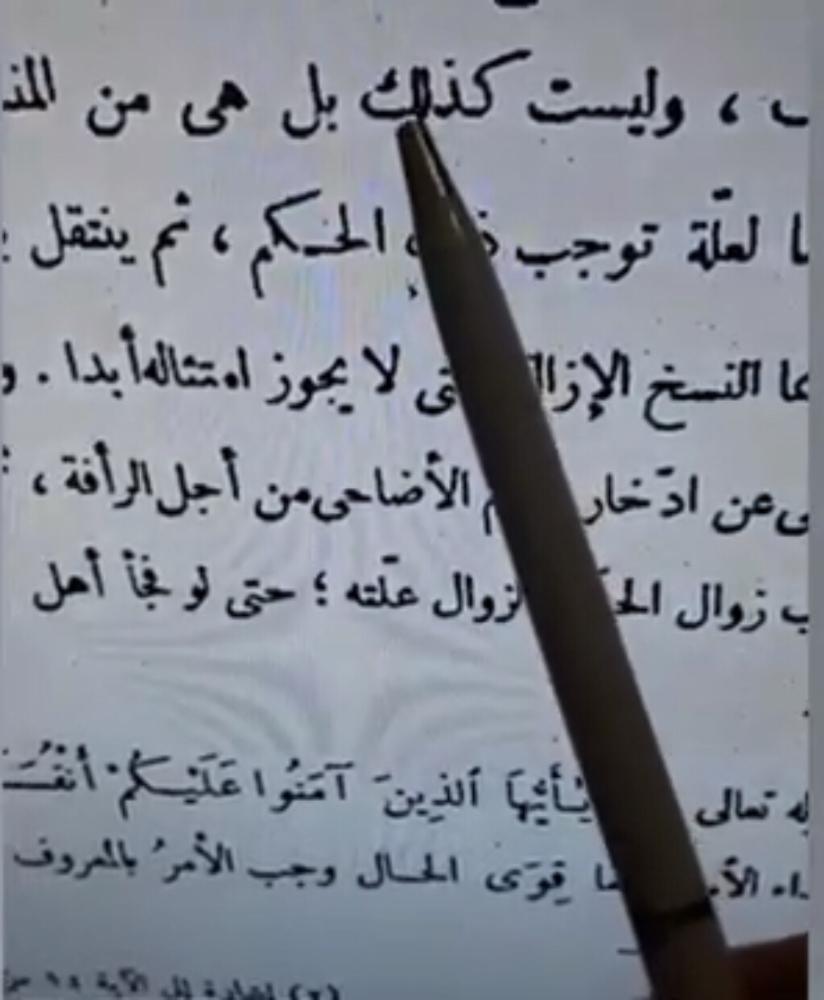
Translation: “to whoever says that peace verses such as Quran 8:61 were abrogated by sword verse then that is wrong and isn’t found in the book of God (I.e Quran) or sunnah and isn’t accepted by a human mind that never happened”
-Source: Al-tabari tafsir Quran 8:61 https://quran.com/8:61/tafsirs/15
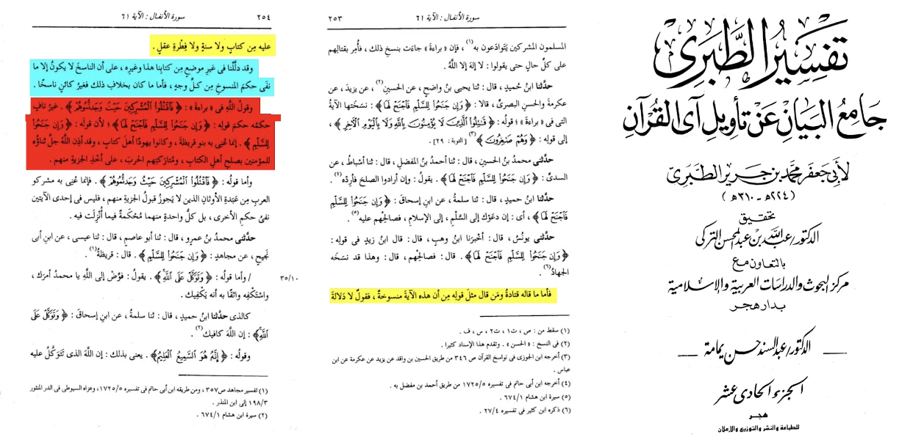
Translation: “Quran 8:61 wasn’t abrogated by any sword verses still applicable till now”
-Source: Tafsir ibn Kathir (RH) Quran 8:61 https://quran.com/8:61/tafsirs/en-tafisr-ibn-kathir
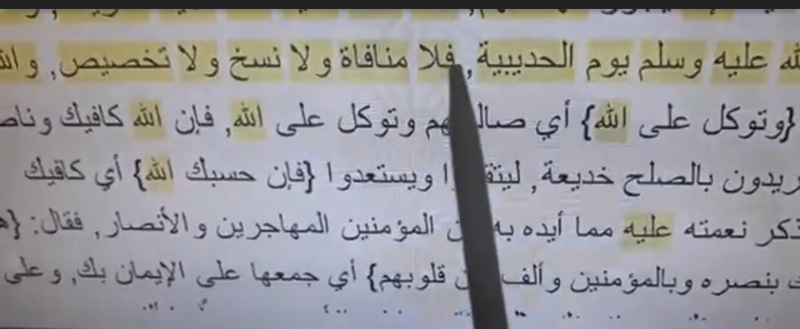
Translation: “imam bukhari sees that the Quran 8:61 wasn’t abrogated and who doesn’t work with it is wrong”
-Source: Sahih bukhari Book of Jizyah bab Al-muwadaa with the polytheists and being good to them and the ithm of who doesn’t do that
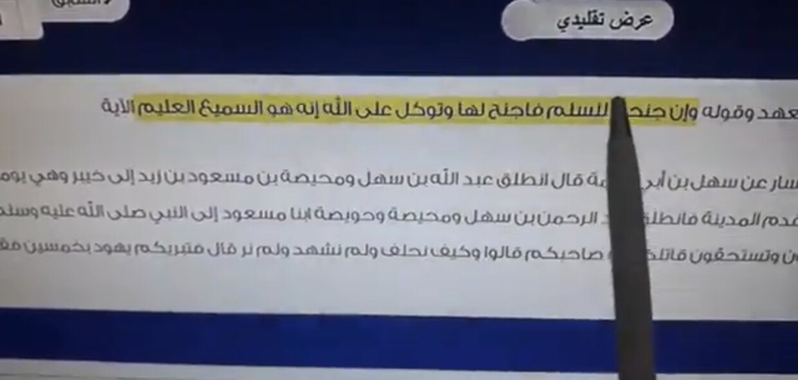
Translation: “Quran 8:61 is still applicable till today to respect peace treaties with non Muslims”
-Source: Fath al-bari sharh sahih al-bukhari imam bin Hajar Al-asqualani volume 6 page 234 explaining the same passage as we showed here with bukahri
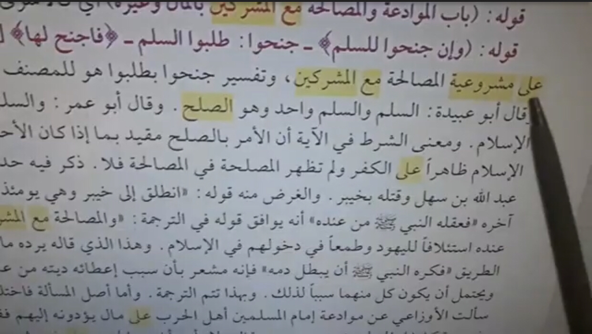
There are more that proves other verses aren’t abroagated like for jamal al-qura’ on 41:34 and 60:8 and al-tabari on 60:8
https://ia600703.us.archive.org/32/items/gkkigkki/gkki.pdf
This book written by Al-sakhawi examines every verse claimed to be abroagated he refutes the peace verses abroagated hoax
Al-Tabari refutes the Argument 2:256 is abroagated in his tafsir
At-Tabari (d. 310 AH) states:
“the most authentic sayings from those sayings is that this verse was revealed concerning the people whom jizya is accepted from him, and scholars didn’t accept the idea of the verses being abroagated”
[Tafsir at-Tabari 2:256]
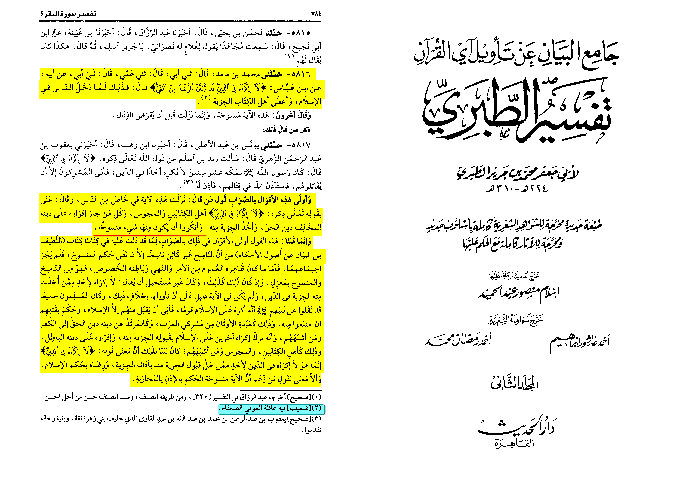
If someone uses ibn abbas remember
And As-Sakhawi writes:
وتخصيص واستثناء اصطلاح وقع بعد ابن عباس، وكان ابن عباس يسمي ذلك نسخاً
‘Specification’ and ‘exception’ are terms that appeared after Ibn Abbas, and Ibn Abbas referred to those as ‘abrogated.’
Source: Jamāl al-Qurrā’ 1/337
And Al-Qurtubi writes:
وَالْمُتَقَدِّمُونَ يُطْلِقُونَ عَلَى التَّخْصِيصِ نَسْخًا تَوَسُّعًا وَمَجَازًا
The predecessors would refer to specification as ‘abrogation,’ extension and granting permission.
Source: Tafsīr al-Qurṭubī 2:106
The classical scholar Ibn Taymiyyah (d. 1328) wrote at length to rebut the claim that this verse had been nullified, “This opinion [that the verse 2:190 is not abrogated] is the opinion of the majority of scholars… Indeed, to claim abrogation requires proof and there is nothing in the Qur’an to contradict this verse. Rather, what is in the Qur’an is consistent with it, so where is the abrogating verse?”7
Ibn Taymiyyah’s view is supported by the statement of the Prophet (peace be upon him), “Verily, the most tyrannical of people to God Almighty is one who kills those who did not fight him.”8 There has never been any justification in Islam, from its inception until today, to kill or harm people because of their religion. Islam only allows violence as a self-defensive response to aggression or to put an end to the persecution of innocent people, Muslims and non-Muslims alike.
7. Ibn Taymīyah, Qāʻidah Mukhtaṣarah fī Qitāl al-Kuffār wa Muhādanatuhum wa Taḥrīm Qatlahum li Mujarrad Kufrihim (al-Riyād: ʻAbd al-ʻAzīz ibn ʻAbd Allāh ibn Ibrāhīm al-Zayr Āl Ḥamad, 2004), 101.
8. Aḥmad Ibn Ḥanbal, Al-Musnad, 6:233-234 #6681; declared authentic (ṣaḥīḥ) by Aḥmad Shākir in the commentary.
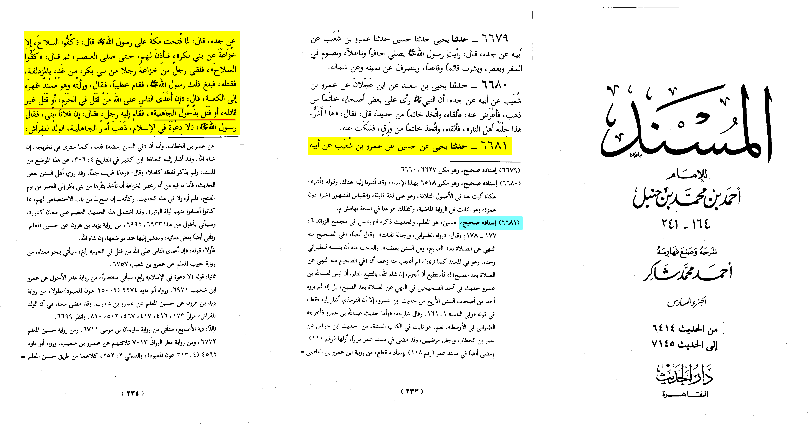
Ibn al-Qayyim, may Allah have mercy on him, said, “The Prophet never forced the religion upon anyone, but rather he only fought those who waged war against him and fought him first. As for those who made peace with him or conducted a truce, then he never fought them and he never compelled them to enter his religion, as his Lord the Almighty had commanded him: There is no compulsion in religion, for right guidance is distinct from error (2:256). The negation in the verse carries the meaning of prohibition, namely, you may not force your religion upon anyone.”
Source: Hidāyat al-Ḥayārá 1/237
And Ibn al-Qayyim said, “Fighting is only necessary to confront war and not to confront unbelief. For this reason, women and children are not killed, neither are the elderly, the blind, or monks who do not participate in fighting. Rather, we only fight those who wage war against us. This was the way of the Messenger of Allah, peace and blessings be upon him, with the people of the earth. He would fight those who declared war on him until they accepted his religion, or they proposed a peace treaty, or they came under his control by paying tribute.”
Source: Aḥkām Ahl al-Dhimmah 1/110
Ibn ‘Ūthaymīn writes on Qur’ān 5:13 abroagation claim:
“The message of abroagation of this verse isn’t true some scholars combined the ruling to fight and the peace verse (5:13) to being a degree less then killing for example the prophet didn’t kill the Jews and that is a form of compassion”
Tafsir Al-Qur’ān, Sūrat Al-Mā’idah Muhammed bin Al-Ūthāymin, volume 1, pg.194
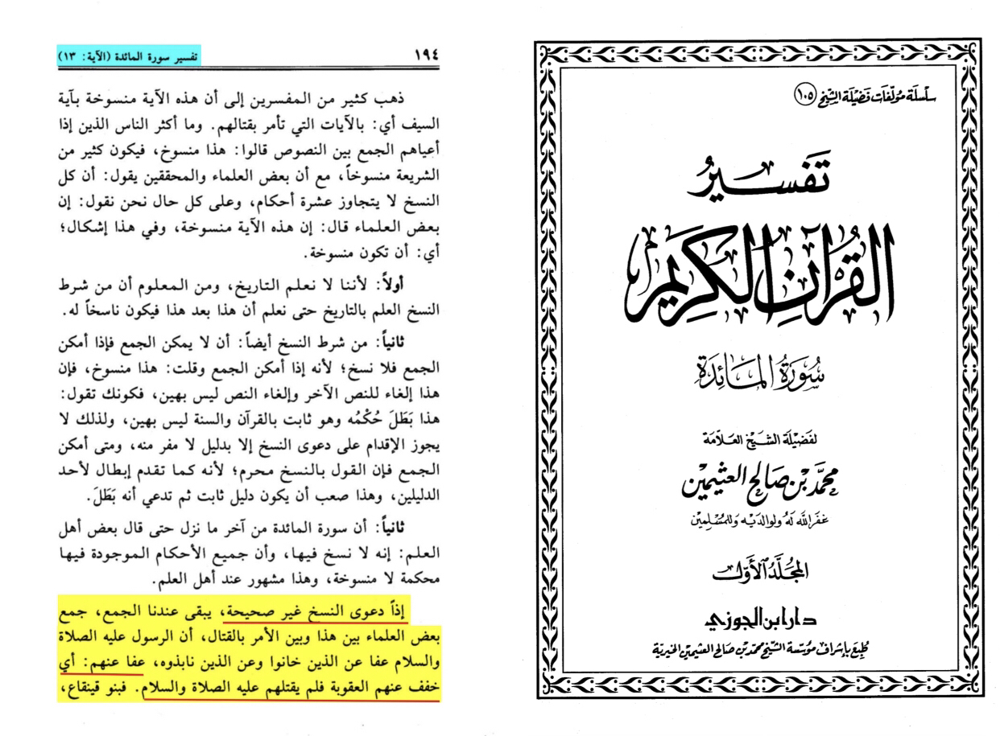
Ibn taymiyah notes:
“It is said to them the majority of the salaf and khalaf agree that it isn’t specific nor abroagated and they say we don’t force anyone to Islam… the reason why this verse revealed was after jihad so how was it abrogated by the reason to fight”
[Qa’idah mukhtasara fi qital al-kuffar pg.123 & 128]
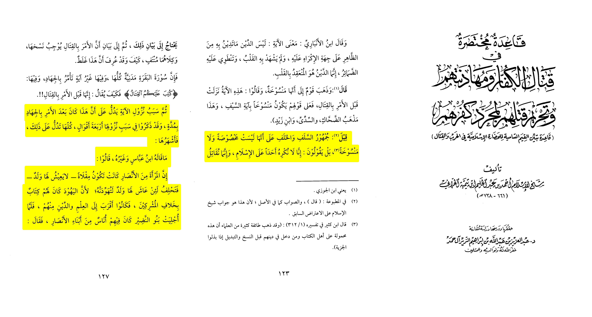
Was man (grace) or fida’ (Ransom) of captives of war abroagated
1.) ibn abbas said that 8:67 was before the Muslims were plenty then it got abroagated by 47:4
Abi Abdullah Al-Qurtubi:
“That the verse is not abroagated and the imam has the choice either ways ali bin abi talha narrated it from ibn abbas that is the saying of a lot of scholars such as ibn ‘umar al-Hassan al-basri and ‘ataa’ and it is the madhab of malik and ash-shāfi’ie and at-thawri and al-awza’i and Abi ‘ubayd and others and it is the correct opinon as the prophet did it so the rightfully guided caliphs.”
[Al-Jāmi’ li Ahkam Al-Qur’ān volume 18 pp.246-247]
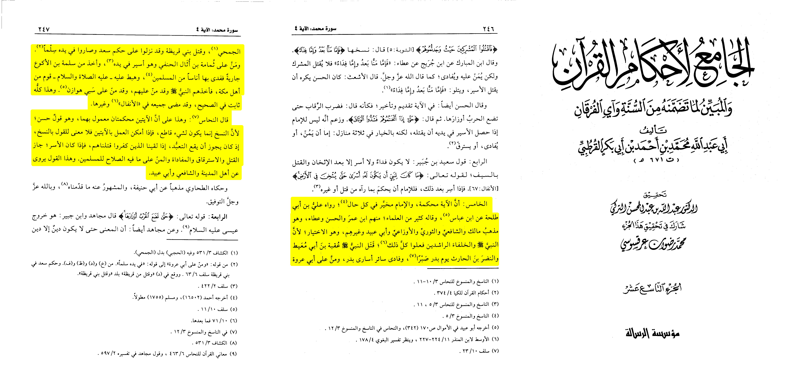
Ibn taymiyah writes:
“And his saying “Later ˹free them either as˺ an act of grace or by ransom until the war comes to an end.” (Qur’ān 47:4) is not abroagated”
[Minhaj-us-Sunnah al-Nabawiyah volume 4 pg.422]
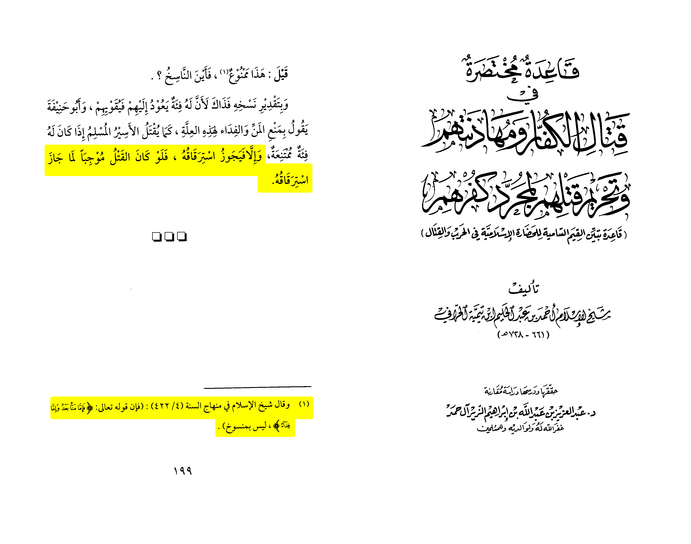
For 60:8
Tafsir al-Qurtubi and At-Tabari both say it is not abroagated
As-Sakhawi said:
“The majority of scholars see this verse as non abroagated”
[Jamal-ul-Qura’ 1/379-380]
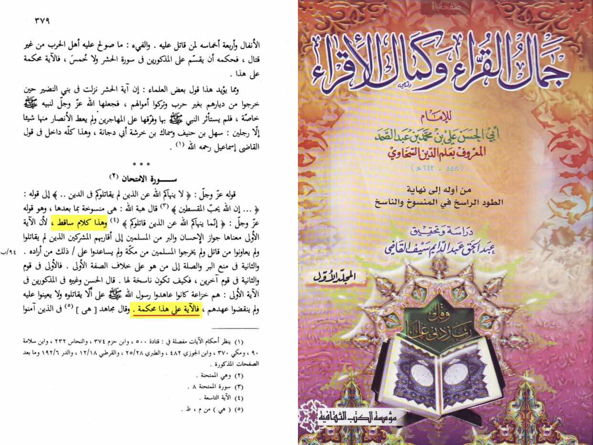
Ibn taymiyah (d. 728 AH) states:
« There are from the people who say that the verses of arguing peacefully and being peaceful with the disbelievers are abroagated by the sword verse, for his thinking that the divine order of jihad abroagated the peace verses and that is wrong. and the answer to that is firstly whoever had dhima (non Muslim minority under Islamic land) or being contradicted person and the musta’man they are not to be strived against with fighting (also the non combatants even if they don’t have a contract) for he is from the people Allah ordered us to treat him with what is best and he doesn’t enter in the people Allah ordered for us to fight. Second is that he exalted said “Do not argue with the People of the Book unless gracefully, except with those of them who act wrongfully.” (Qur’ān 29:46) so the one who acts wrongfully we were not ordered to treat him with which is best on the opposite of the one who seeks knowledge (non combatant). »
•📓 [Al-Jawab as-sahih (1/218-219)]
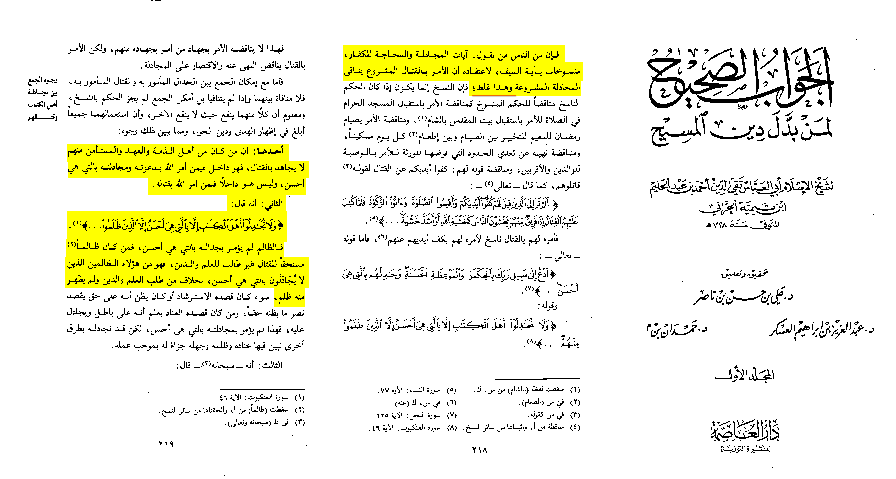
He then continues by quoting evidence it applies on pagans also (9:6)